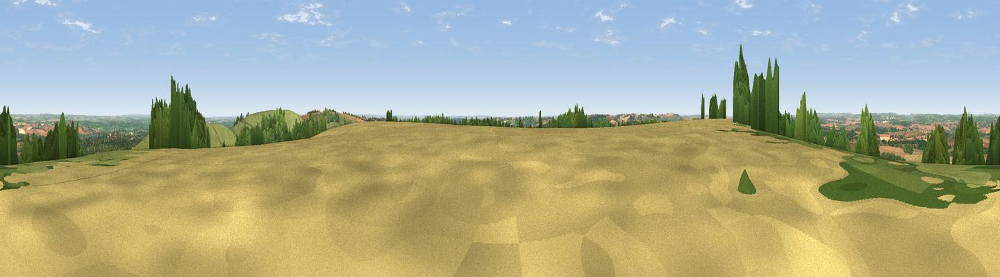

Inkpen Hill
#5553 in England · top 4% of its area beats it · near CombeWhere it is
The exact computed spot (SU 35624 61944). Click the marker for map links.
The view, rendered

A 360° render of this exact spot computed from the terrain model, tree cover and land cover — summer colours, afternoon light, calibrated against photographs of famous viewpoints. Real trees, hedges and buildings will differ in detail.
The panorama
Grey silhouette: terrain skyline in each direction (720 bearings, Earth curvature and refraction included). Dashed green: skyline with trees (+15 m) and buildings (+8 m) as obstacles. Blue strip: how far the ground is visible on each bearing.
Where the view opens
Wedge length = distance to the farthest visible ground on that bearing (vegetation-aware). Rings at 10, 25 and 50 km.
What fills the view
39% grassland · 36% cropland · 25% woodland · 1% built-up
Angular shares of the visible panorama (visual magnitude), not map area. Landscape diversity 0.49 (0–1 Shannon).
Key numbers
More beautiful places nearby
The staircase of upgrades: each row has a higher view potential than everything closer. Driving times are estimates from straight-line distance, calibrated against real road routing — check an actual route before setting out.
| Place | Direction | Drive | Score |
|---|---|---|---|
| Gallows Down | ENE · 1 km | ~3 min | 75.6 |
| Beacon Hill | ESE · 11 km | ~21 min | 76.7 |
| Martinsell viewpoint | W · 18 km | ~31 min | 77.3 |
| Viewpoint near Buriton | SE · 55 km | ~77 min | 80.0 |
| Beacon Hill | SE · 63 km | ~85 min | 85.8 |
| Mottistone Down | S · 77 km | ~101 min | 87.2 |
| St Catherines Hill | S · 86 km | ~110 min | 87.6 |
| Viewpoint near St. Lawrence | SSE · 86 km | ~111 min | 88.2 |
51.35546, -1.48979 · source: osm peak · position refined by local search. Computed location — check access rights before visiting.